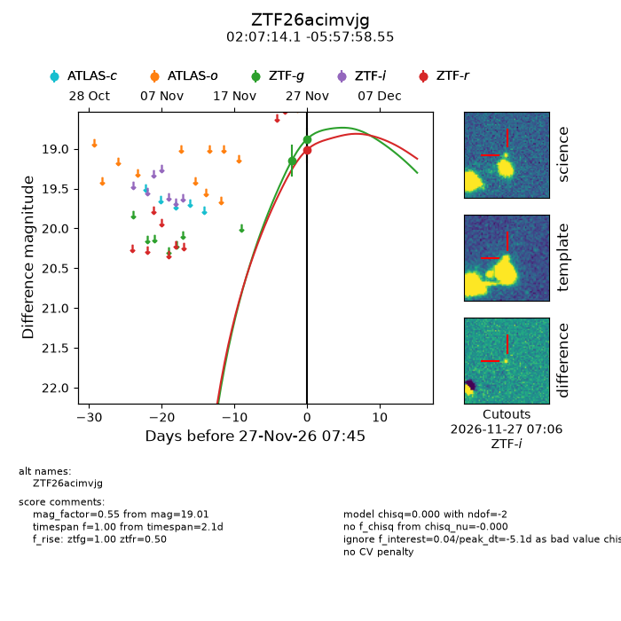
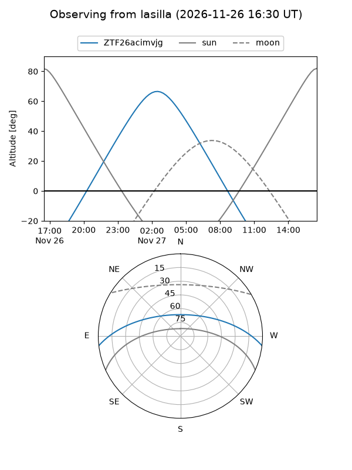
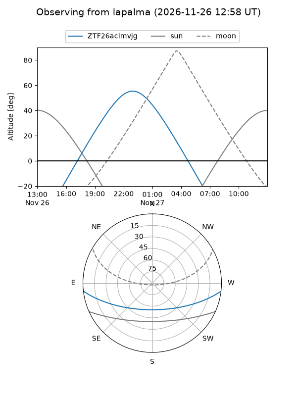
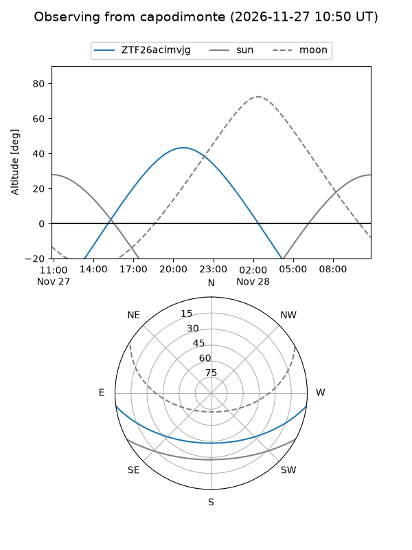
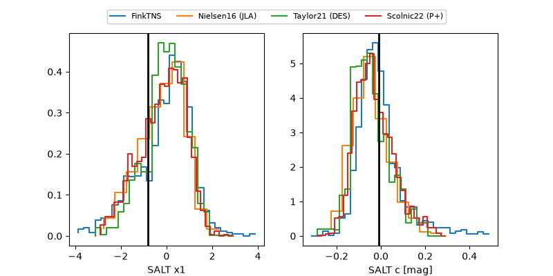

ZTF26acimvjg
Target ZTF26acimvjg at 2026-11-27 07:46
Aliases and brokers:
FINK-ZTF: ztf.fink-portal.org/ZTF26acimvjg
Lasair-ZTF: lasair-ztf.lsst.ac.uk/objects/ZTF26acimvjg
ALeRCE-ZTF: alerce.online/object/ZTF26acimvjg
Direct TNS query: direct search
alt names
ZTF26acimvjg (ztf,fink_ztf)
Coordinates:
equatorial (ra, dec) = 31.8089,-5.96626
equatorial (HMS+DMS) = 02:07:14.15,-05:57:58.55
galactic (l, b) = (166.7632,-62.20138)
Flags:
peak dt: -5.1
Photometry:
last ztfg=18.88, ztfr=19.01
2 ztfg, 1 ztfr detections
Lightcurve

Visibility



Additional plots
